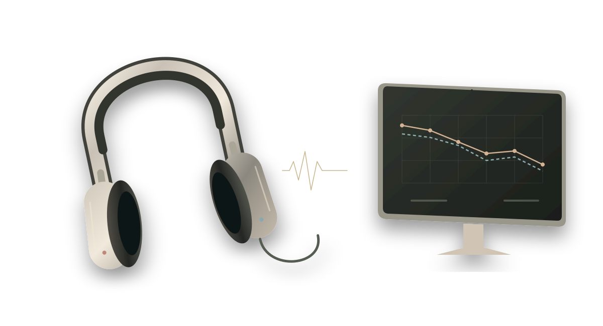

Specialist coverage.
Without the commute.
Connect with remote audiologists for suitable appointments.
Remote audiology for ENT

The patient stays in your clinic.
The audiologist connects remotely.
A trained on-site assistant helps the patient prepare for their appointment.
Built around your ENT practice
Connect with remote audiologists for suitable appointments.
On-site support remains part of the care experience.
Reviewed findings support the next step in your patient’s care.